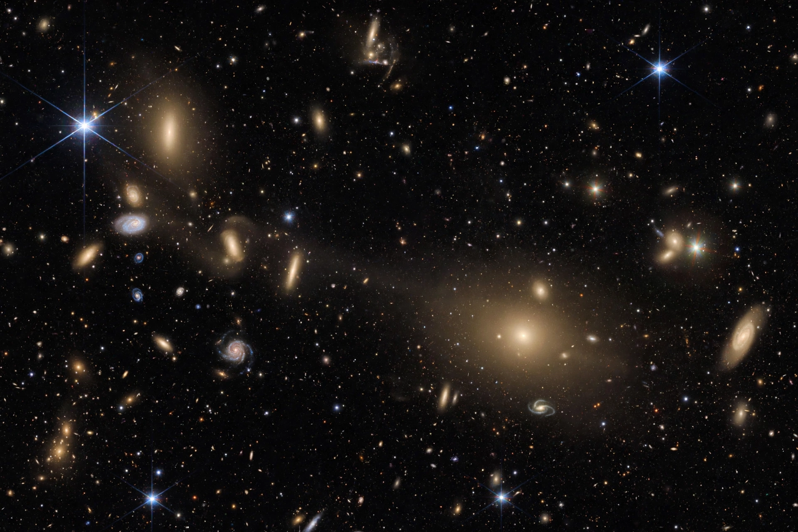

The Virgo Cluster is a large cluster of galaxies whose centre is about 53.8 million light-years (16.5 megaparsecs) away in the constellation Virgo. Comprising approximately 1,300 (and possibly up to 2,000) member galaxies, it forms the heart of the larger Virgo Supercluster, of which the Local Group — containing the Milky Way — is an outlying member.
 | |
| Constellation | Virgo / Coma Berenices |
|---|---|
| Distance | 53.8 ± 0.3 Mly (16.5 Mpc) |
| Number of galaxies | ~1,300–2,000 |
| Brightest member | Messier 49 |
| Mass | ~1.2 × 1015 solar masses |
The cluster has a relatively dense core dominated by giant elliptical galaxies, with three main subclumps centred on M87, M86 and M49. M87, near the centre, hosts one of the most massive known black holes and a famous relativistic jet. Charles Messier catalogued many of its members; the string of galaxies known as Markarian's Chain arcs through the core. Like other rich clusters, Virgo is filled with hot intracluster gas (visible in X-rays) that strips gas from infalling spirals, and it contains large numbers of globular clusters and intracluster stars.
As the nearest rich cluster, Virgo is a key rung in the cosmic distance ladder and a laboratory for environmental effects on galaxy evolution — ram-pressure stripping, harassment and strangulation transform spirals into lenticulars and dwarfs. The Milky Way's Local Group is falling towards the cluster, contributing to the "Virgocentric flow"; the Great Attractor and the Shapley Supercluster lie beyond.
From Wikipedia, the free encyclopedia.